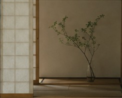

There is a particular quiet that settles over a room made of paper. In the workshop of designer Yoon Seojin, light arrives the way it might through water — softened, slowed, turned the color of warm rice. The walls are hanji, the mulberry-bark paper that has lined Korean homes for a thousand years, and they hold the morning like a held breath.
“People think tradition is something you preserve behind glass,” Yoon says, running a hand along a screen she finished last spring. “But hanji was never precious. It was the cheapest thing in the house. You wrote on it, you wrapped food in it, you patched the door with it when the wind came through.”
That ordinariness is exactly what drew her back. After a decade designing interiors in Copenhagen, Yoon returned to Seoul in 2021 with a suitcase of Scandinavian restraint and a growing suspicion that she had been looking in the wrong direction for it.
The weight of what is light
Hanji is deceptively strong. A single sheet, properly made, can outlast the building it decorates; documents pressed between its layers have survived eight centuries in Korean archives. The paper breathes, regulating humidity in a way no synthetic surface can, and it ages without yellowing into brittleness.
“The material remembers every hand that touched it. That is not a flaw to design around — it is the point.”
Yoon Seojin
Her current project is a series of folding screens commissioned for a tea house in Bukchon. Each panel is built from forty layers of hanji, dyed with persimmon and pine soot, then sanded back until the grain of the fiber reads like topography. Held to the light, they reveal the ghosts of every sheet beneath.

What makes the work feel contemporary is not a departure from craft but a deepening of it. Yoon collaborates with a third- generation papermaker in Gapyeong, where the pulp is still beaten by hand and dried on heated floors. The pace is unhurried by necessity: a single large sheet can take three days to make.
“In Copenhagen I learned to subtract,” she says. “Here I am learning to wait. They are closer than I thought.”
A grammar of restraint
That patience is becoming a quiet movement. Across Seoul, a cohort of designers in their thirties is treating heritage not as a motif to be quoted but as a discipline to be relearned — the joinery of a soban table, the proportion of a moon jar, the logic of a room that asks you to sit on the floor and look up.
None of them would call it a revival. Revival implies the thing was dead. What they describe instead is a conversation that simply never ended, one they are old enough now to join.